Статистика обращений к goome.ru
Статистика обращений к goome.ru
Программа стартовала в ср. 13 июн 2018 15:17.
Анализ обращений к серверу с пт. 30 мар 2018 18:37 по ср. 13 июн 2018 14:55 (74,85 дней).
Статистика обращений к goome.ruПрограмма стартовала в ср. 13 июн 2018 15:17.
Анализ обращений к серверу с пт. 30 мар 2018 18:37 по ср. 13 июн 2018 14:55 (74,85 дней).
(Переход: Вверх | Основная Информация | Статистика по месяцам | Статистика по дням недели | Статистика по времени суток | Статистика по доменам | Статистика по организациям | Статистика по перенаправляющим ссылкам | Статистика отказов по ссылкам | Статистика по ссылающимся сайтам | Статистика по браузерам (подробная) | Статистика по браузерам (суммарная) | Статистика по операционным системам | Статистика по коду возврата | Статистика по размерам файлов | Статистика по типам файлов | Статистика по директориям | Статистика по запросам)
Запись в круглых скобках - данные за 7 дней до 13 июн 2018 15:17.
Успешных обращений: 2 228 (1 431)
Среднее кол. успешных обращений в день: 29 (204)
Успешных обращений к страницам: 347 (107)
Среднее кол. успешных обращений к страницам в день: 4 (15)
Неуспешных запросов: 1 146 (20)
Перенаправленных запросов: 117 (2)
Количество запрошенных файлов: 261 (398)
Количество обслуженных хостов: 2 (2)
Данных передано: 99,50 мегабайт (81,36 мегабайт)
Среднее кол. переданных данных в день: 1,33 мегабайт (11,62 мегабайт)
(Переход: Вверх | Основная Информация | Статистика по месяцам | Статистика по дням недели | Статистика по времени суток | Статистика по доменам | Статистика по организациям | Статистика по перенаправляющим ссылкам | Статистика отказов по ссылкам | Статистика по ссылающимся сайтам | Статистика по браузерам (подробная) | Статистика по браузерам (суммарная) | Статистика по операционным системам | Статистика по коду возврата | Статистика по размерам файлов | Статистика по типам файлов | Статистика по директориям | Статистика по запросам)
Каждый символ ( ) отображает 8 обращений к страницам или около этого.
) отображает 8 обращений к страницам или около этого.
| месяц | запросы | страниц | |
|---|---|---|---|
| мар 2018 | 27 | 20 |  |
| апр 2018 | 66 | 54 |  |
| мая 2018 | 4 | 4 | |
| июн 2018 | 2131 | 269 |  |
Наибольшее количество обращений в июн 2018 (269 обращений к страницам).
(Переход: Вверх | Основная Информация | Статистика по месяцам | Статистика по дням недели | Статистика по времени суток | Статистика по доменам | Статистика по организациям | Статистика по перенаправляющим ссылкам | Статистика отказов по ссылкам | Статистика по ссылающимся сайтам | Статистика по браузерам (подробная) | Статистика по браузерам (суммарная) | Статистика по операционным системам | Статистика по коду возврата | Статистика по размерам файлов | Статистика по типам файлов | Статистика по директориям | Статистика по запросам)
Каждый символ () отображает 3 обращений к страницам или около этого.
| день | запросы | страниц | |
|---|---|---|---|
| вс. | 108 | 92 |   |
| пн. | 117 | 65 | |
| вт. | 120 | 64 | |
| ср. | 811 | 38 | |
| чт. | 972 | 16 | |
| пт. | 44 | 30 | |
| сб. | 56 | 42 | |
(Переход: Вверх | Основная Информация | Статистика по месяцам | Статистика по дням недели | Статистика по времени суток | Статистика по доменам | Статистика по организациям | Статистика по перенаправляющим ссылкам | Статистика отказов по ссылкам | Статистика по ссылающимся сайтам | Статистика по браузерам (подробная) | Статистика по браузерам (суммарная) | Статистика по операционным системам | Статистика по коду возврата | Статистика по размерам файлов | Статистика по типам файлов | Статистика по директориям | Статистика по запросам)
Каждый символ () отображает 1 обращение к странице.
| час | запросы | страниц | |
|---|---|---|---|
| 0 | 110 | 21 | |
| 1 | 26 | 9 | |
| 2 | 10 | 7 | |
| 3 | 57 | 16 | |
| 4 | 32 | 28 | |
| 5 | 13 | 12 | |
| 6 | 15 | 11 | |
| 7 | 7 | 6 | |
| 8 | 239 | 14 | |
| 9 | 112 | 8 | |
| 10 | 97 | 18 | |
| 11 | 364 | 17 | |
| 12 | 412 | 13 | |
| 13 | 54 | 25 | |
| 14 | 13 | 12 | |
| 15 | 130 | 11 | |
| 16 | 52 | 9 | |
| 17 | 33 | 29 | |
| 18 | 52 | 25 | |
| 19 | 58 | 15 | |
| 20 | 29 | 7 | |
| 21 | 24 | 17 | |
| 22 | 204 | 9 | |
| 23 | 85 | 8 | |
(Переход: Вверх | Основная Информация | Статистика по месяцам | Статистика по дням недели | Статистика по времени суток | Статистика по доменам | Статистика по организациям | Статистика по перенаправляющим ссылкам | Статистика отказов по ссылкам | Статистика по ссылающимся сайтам | Статистика по браузерам (подробная) | Статистика по браузерам (суммарная) | Статистика по операционным системам | Статистика по коду возврата | Статистика по размерам файлов | Статистика по типам файлов | Статистика по директориям | Статистика по запросам)
Список доменов, отсортировано по суммарному трафику.
| запросы | %байт | домен |
|---|---|---|
| 2228 | 100% | [нераспознанный IP-адрес] |
(Переход: Вверх | Основная Информация | Статистика по месяцам | Статистика по дням недели | Статистика по времени суток | Статистика по доменам | Статистика по организациям | Статистика по перенаправляющим ссылкам | Статистика отказов по ссылкам | Статистика по ссылающимся сайтам | Статистика по браузерам (подробная) | Статистика по браузерам (суммарная) | Статистика по операционным системам | Статистика по коду возврата | Статистика по размерам файлов | Статистика по типам файлов | Статистика по директориям | Статистика по запросам)
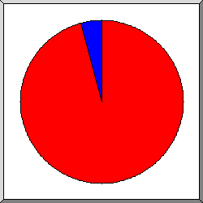
Поделено на сектора по количеству обращений.
 82
82
 54
54
Список организаций, отсортировано по количеству обращений.
| запросы | %байт | организация |
|---|---|---|
| 2135 | 99,97% | 82 |
| 93 | 0,03% | 54 |
(Переход: Вверх | Основная Информация | Статистика по месяцам | Статистика по дням недели | Статистика по времени суток | Статистика по доменам | Статистика по организациям | Статистика по перенаправляющим ссылкам | Статистика отказов по ссылкам | Статистика по ссылающимся сайтам | Статистика по браузерам (подробная) | Статистика по браузерам (суммарная) | Статистика по операционным системам | Статистика по коду возврата | Статистика по размерам файлов | Статистика по типам файлов | Статистика по директориям | Статистика по запросам)
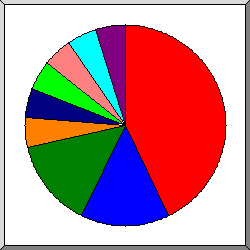
Поделено на сектора количество перенаправленных запросов.
http://goome.ru/
http://yandex.ru/clck/jsredir
 http://www.goome.ru/
http://www.goome.ru/
 http://goome.ru/netcat/
http://goome.ru/netcat/
 http://goome.ru/cms/admin/
http://goome.ru/cms/admin/
 http://goome.ru/mscms/
http://goome.ru/mscms/
 http://goome.ru/cms/
http://goome.ru/cms/
 http://www.yandex.ru/clck/jsredir
http://www.yandex.ru/clck/jsredir
 https://yandex.ru/
https://yandex.ru/
Список ссылающихся URLей, отсортировано количество перенаправленных запросов.
(Переход: Вверх | Основная Информация | Статистика по месяцам | Статистика по дням недели | Статистика по времени суток | Статистика по доменам | Статистика по организациям | Статистика по перенаправляющим ссылкам | Статистика отказов по ссылкам | Статистика по ссылающимся сайтам | Статистика по браузерам (подробная) | Статистика по браузерам (суммарная) | Статистика по операционным системам | Статистика по коду возврата | Статистика по размерам файлов | Статистика по типам файлов | Статистика по директориям | Статистика по запросам)
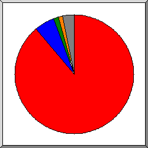
Поделено на сектора по количеству отказов.
http://www.goome.ru/owner
http://www.goome.ru/cabinet/
http://goome.ru/main
http://goome.ru/
 другое
другое
Список ссылающихся URLs, отсортировано по количеству отказов.
(Переход: Вверх | Основная Информация | Статистика по месяцам | Статистика по дням недели | Статистика по времени суток | Статистика по доменам | Статистика по организациям | Статистика по перенаправляющим ссылкам | Статистика отказов по ссылкам | Статистика по ссылающимся сайтам | Статистика по браузерам (подробная) | Статистика по браузерам (суммарная) | Статистика по операционным системам | Статистика по коду возврата | Статистика по размерам файлов | Статистика по типам файлов | Статистика по директориям | Статистика по запросам)
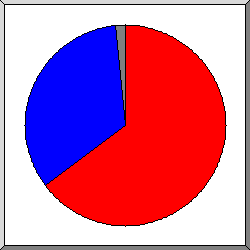
Поделено на сектора по количеству обращений.
http://goome.ru/
http://www.goome.ru/
другое
Список ссылающихся сайтов, отсортировано по количеству обращений.
| запросы | сайт |
|---|---|
| 1112 | http://goome.ru/ |
| 584 | http://www.goome.ru/ |
| 9 | https://l.facebook.com/ |
| 4 | http://m.facebook.com/ |
| 3 | http://mail.goome.ru/ |
| 3 | http://yandex.ru/ |
| 2 | http://l.instagram.com/ |
| 1 | http://cpa-otkat.ru/ |
| 1 | https://www.cjb.net/ |
| 1 | http://advokaty-24.ru/ |
| 1 | http://virbot.ru/ |
| 1 | https://yandex.ru/ |
(Переход: Вверх | Основная Информация | Статистика по месяцам | Статистика по дням недели | Статистика по времени суток | Статистика по доменам | Статистика по организациям | Статистика по перенаправляющим ссылкам | Статистика отказов по ссылкам | Статистика по ссылающимся сайтам | Статистика по браузерам (подробная) | Статистика по браузерам (суммарная) | Статистика по операционным системам | Статистика по коду возврата | Статистика по размерам файлов | Статистика по типам файлов | Статистика по директориям | Статистика по запросам)
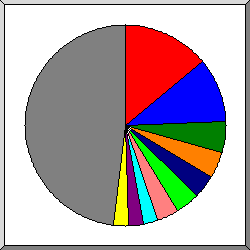
Поделено на сектора по количеству обращений к странице.
Mozilla/5.0 (compatible; YandexBot/3.0; +http://yandex.com/bots)
Mozilla/5.0 (Windows NT 10.0; Win64; x64; rv:60.0) Gecko/20100101 Firefox/60.0
Mozilla/5.0 (Windows NT 6.1; WOW64) AppleWebKit/537.36 (KHTML, like Gecko) Chrome/50.0.2661.102 Safari/537.36; 360Spider
Mozilla/5.0 (compatible; MJ12bot/v1.4.8; http://mj12bot.com/)
Mozilla/5.0 (compatible; Googlebot/2.1; +http://www.google.com/bot.html)
Mozilla/5.0 (X11; Linux x86_64) AppleWebKit/537.36 (KHTML, like Gecko) Chrome/34.0.1847.132 Safari/537.36
Mozilla/5.0 (compatible; statdom.ru/Bot; +http://statdom.ru/bot.html)
Mozilla/5.0 (X11; Linux x86_64; rv:52.0) Gecko/20100101 Firefox/52.0
Go 1.1 package http
 Mozilla/5.0 (compatible; MJ12bot/v1.4.7; http://mj12bot.com/)
другое
Mozilla/5.0 (compatible; MJ12bot/v1.4.7; http://mj12bot.com/)
другое
Показано первые 40 браузеров - по количеству обращений к странице, отсортировано по количеству обращений к странице.
| запросы | страниц | браузер |
|---|---|---|
| 65 | 48 | Mozilla/5.0 (compatible; YandexBot/3.0; +http://yandex.com/bots) |
| 1359 | 35 | Mozilla/5.0 (Windows NT 10.0; Win64; x64; rv:60.0) Gecko/20100101 Firefox/60.0 |
| 17 | 17 | Mozilla/5.0 (Windows NT 6.1; WOW64) AppleWebKit/537.36 (KHTML, like Gecko) Chrome/50.0.2661.102 Safari/537.36; 360Spider |
| 19 | 14 | Mozilla/5.0 (compatible; MJ12bot/v1.4.8; http://mj12bot.com/) |
| 21 | 13 | Mozilla/5.0 (compatible; Googlebot/2.1; +http://www.google.com/bot.html) |
| 13 | 13 | Mozilla/5.0 (X11; Linux x86_64) AppleWebKit/537.36 (KHTML, like Gecko) Chrome/34.0.1847.132 Safari/537.36 |
| 14 | 12 | Mozilla/5.0 (compatible; statdom.ru/Bot; +http://statdom.ru/bot.html) |
| 8 | 8 | Mozilla/5.0 (X11; Linux x86_64; rv:52.0) Gecko/20100101 Firefox/52.0 |
| 8 | 8 | Go 1.1 package http |
| 8 | 8 | Mozilla/5.0 (compatible; MJ12bot/v1.4.7; http://mj12bot.com/) |
| 7 | 7 | Mozilla/5.0 (compatible; YandexMetrika/2.0; +http://yandex.com/bots) |
| 7 | 7 | Mozilla/5.0 (iPhone; CPU iPhone OS 11_3 like Mac OS X) AppleWebKit/605.1.15 (KHTML, like Gecko) Version/11.0 Mobile/15E148 Safari/604.1 |
| 6 | 6 | Mozilla/5.0 (compatible; openstat.ru/Bot) |
| 6 | 6 | Mozilla/5.0 (Windows NT 6.1) AppleWebKit/537.36 (KHTML, like Gecko) Chrome/42.0.2311.90 Safari/537.36 |
| 5 | 5 | Mozilla/5.0 (X11; Datanyze; Linux x86_64) AppleWebKit/537.36 (KHTML, like Gecko) Chrome/65.0.3325.181 Safari/537.36 |
| 5 | 5 | Mozilla/5.0 (Windows NT 6.1; Win64; x64) AppleWebKit/537.36 (KHTML, like Gecko) Chrome/65.0.3325.181 Safari/537.36 |
| 5 | 5 | Mozilla/5.0 (Macintosh; Intel Mac OS X 10_9_2) AppleWebKit/537.36 (KHTML, like Gecko) Chrome/38.0.2125.111 Safari/537.36 |
| 144 | 5 | Mozilla/5.0 (Windows NT 10.0; Win64; x64) AppleWebKit/537.36 (KHTML, like Gecko) Chrome/66.0.3359.181 Safari/537.36 |
| 5 | 5 | Mozilla/5.0 (Windows NT 6.2; WOW64; rv:17.0) Gecko/20100101 Firefox/17.0 |
| 7 | 4 | Mozilla/5.0 (compatible; bingbot/2.0; +http://www.bing.com/bingbot.htm) |
| 4 | 4 | Mozilla/5.0 (Macintosh; Intel Mac OS X 10_12_6) AppleWebKit/537.36 (KHTML, like Gecko) Chrome/61.0.3163.100 Safari/537.36 |
| 4 | 4 | Mozilla/5.0 (Linux; Android 6.0.1; Nexus 5X Build/MMB29P) AppleWebKit/537.36 (KHTML, like Gecko) Chrome/41.0.2272.96 Mobile Safari/537.36 (compatible; Googlebot/2.1; +http://www.google.com/bot.html) |
| 4 | 4 | Mozilla/5.0 (Macintosh; Intel Mac OS X 10_12_6) AppleWebKit/537.36 (KHTML, like Gecko) Chrome/60.0.3112.90 Safari/537.36 |
| 3 | 3 | Mozilla/5.0 (Windows NT 6.1; Win64; x64; rv:59.0) Gecko/20100101 Firefox/59.0 |
| 5 | 3 | Mozilla/5.0 (compatible; Linux x86_64; Mail.RU_Bot/Robots/2.0; +http://go.mail.ru/help/robots) |
| 3 | 3 | Mozilla/5.0 (X11; Linux x86_64) AppleWebKit/537.36 (KHTML, like Gecko) Chrome/56.0.2924.87 Safari/537.36 |
| 2 | 2 | Mozilla/5.0(compatible;MSIE9.0;WindowsNT6.1;Trident/5.0) |
| 2 | 2 | Mozilla/5.0 (Windows NT 6.1; WOW64; rv:51.0) Gecko/20100101 Firefox/51.0 |
| 2 | 2 | Mozilla/5.0 (Windows NT 10.0; Win64; x64) AppleWebKit/537.36 (KHTML, like Gecko) Chrome/64.0.3282.186 Safari/537.36 |
| 2 | 2 | Mozilla/5.8 |
| 72 | 2 | Mozilla/5.0 (Windows NT 10.0; Win64; x64) AppleWebKit/537.36 (KHTML, like Gecko) Chrome/67.0.3396.79 Safari/537.36 |
| 2 | 2 | Mozilla/5.0 (Windows NT 10.0; Win64; x64) AppleWebKit/537.36 (KHTML, like Gecko) Chrome/65.0.3325.181 Safari/537.36 |
| 4 | 2 | Mozilla/5.0 (compatible; DuckDuckGo-Favicons-Bot/1.0; +http://duckduckgo.com) |
| 2 | 2 | Mozilla/5.0 (Windows NT 10.0; WOW64; rv:51.0) Gecko/20100101 Firefox/51.0 |
| 2 | 2 | Mozilla/5.0 (Windows NT 10.0; Win64; x64; rv:61.0) Gecko/20100101 Firefox/61.0 |
| 2 | 2 | Mozilla/5.0 (Windows NT 10.0; Win64; x64) AppleWebKit/537.36 (KHTML, like Gecko) Chrome/61.0.3163.100 Safari/537.36 |
| 3 | 1 | Mozilla/5.0 (compatible; archive.org_bot +http://www.archive.org/details/archive.org_bot) |
| 1 | 1 | Mozilla/5.0 (Windows; U; Windows NT 5.1; en-US; rv:1.9.2.8) Gecko/20100721 Firefox/3.6.8 |
| 1 | 1 | Mozilla/5.0 (iPhone; CPU iPhone OS 10_3_3 like Mac OS X) AppleWebKit/603.3.8 (KHTML, like Gecko) Version/10.0 Mobile/14G60 Safari/602.1 |
| 1 | 1 | Mozilla/5.0 (Windows NT 6.3; WOW64) AppleWebKit/537.36 (KHTML, like Gecko) Chrome/40.0.2214.115 Safari/537.36 |
| 371 | 64 | [не распознано: 78 браузеров] |
(Переход: Вверх | Основная Информация | Статистика по месяцам | Статистика по дням недели | Статистика по времени суток | Статистика по доменам | Статистика по организациям | Статистика по перенаправляющим ссылкам | Статистика отказов по ссылкам | Статистика по ссылающимся сайтам | Статистика по браузерам (подробная) | Статистика по браузерам (суммарная) | Статистика по операционным системам | Статистика по коду возврата | Статистика по размерам файлов | Статистика по типам файлов | Статистика по директориям | Статистика по запросам)
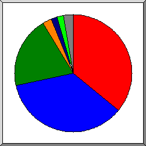
Поделено на сектора по количеству обращений к странице.
Safari
Netscape (compatible)
Firefox
Go
Mozilla
MSIE
другое
Список браузеров на которые приходиться, как минимум 1 обращение к странице, отсортировано по количеству обращений к странице.
| N | запросы | страниц | браузер |
|---|---|---|---|
| 1 | 461 | 122 | Safari |
| 399 | 109 | Safari/537 | |
| 9 | 9 | Safari/604 | |
| 1 | 1 | Safari/602 | |
| 1 | 1 | Safari/530 | |
| 1 | 1 | Safari/531 | |
| 1 | 1 | Safari/6531 | |
| 2 | 164 | 121 | Netscape (compatible) |
| 3 | 1393 | 68 | Firefox |
| 1359 | 35 | Firefox/60 | |
| 8 | 8 | Firefox/52 | |
| 5 | 5 | Firefox/51 | |
| 5 | 5 | Firefox/17 | |
| 3 | 3 | Firefox/59 | |
| 2 | 2 | Firefox/61 | |
| 2 | 2 | Firefox/57 | |
| 2 | 2 | Firefox/3 | |
| 2 | 1 | Firefox/41 | |
| 1 | 1 | Firefox/33 | |
| 4 | 8 | 8 | Go |
| 8 | 8 | Go/1 | |
| 5 | 83 | 6 | Mozilla |
| 6 | 8 | 6 | MSIE |
| 1 | 1 | MSIE/8 | |
| 2 | 1 | MSIE/10 | |
| 2 | 1 | MSIE/6 | |
| 1 | 1 | MSIE/7 | |
| 7 | 2 | 2 | Opera |
| 2 | 2 | Opera/9 | |
| 8 | 1 | 1 | facebookexternalua |
| 9 | 1 | 1 | Wget |
| 1 | 1 | Wget/1 | |
| 10 | 2 | 1 | DomainCrawler |
| 2 | 1 | DomainCrawler/3 | |
| 11 | 1 | 1 | python-requests |
| 1 | 1 | python-requests/2 | |
| 12 | 1 | 1 | Virusdie crawler |
| 1 | 1 | Virusdie crawler/3 | |
| 13 | 1 | 1 | SafeDNSBot (https: |
| 1 | 1 | SafeDNSBot (https://www | |
| 14 | 1 | 1 | MJ12bot |
| 1 | 1 | MJ12bot/1 | |
| 94 | 0 | [не распознано: 2 браузеров] |
(Переход: Вверх | Основная Информация | Статистика по месяцам | Статистика по дням недели | Статистика по времени суток | Статистика по доменам | Статистика по организациям | Статистика по перенаправляющим ссылкам | Статистика отказов по ссылкам | Статистика по ссылающимся сайтам | Статистика по браузерам (подробная) | Статистика по браузерам (суммарная) | Статистика по операционным системам | Статистика по коду возврата | Статистика по размерам файлов | Статистика по типам файлов | Статистика по директориям | Статистика по запросам)
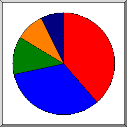
Поделено на сектора по количеству обращений к странице.
Неизвестная ОС
Windows
Unix
Macintosh
роботы
Список операционных систем, отсортировано по количеству обращений к странице.
| N | запросы | страниц | ОС |
|---|---|---|---|
| 1 | 264 | 131 | Неизвестная ОС |
| 2 | 1727 | 112 | Windows |
| 1612 | 65 | Windows NT | |
| 107 | 40 | Неизвестная Windows-система | |
| 7 | 6 | Windows XP | |
| 1 | 1 | Windows Server 2003 | |
| 3 | 43 | 41 | Unix |
| 43 | 41 | Linux | |
| 4 | 157 | 31 | Macintosh |
| 5 | 30 | 25 | роботы |
(Переход: Вверх | Основная Информация | Статистика по месяцам | Статистика по дням недели | Статистика по времени суток | Статистика по доменам | Статистика по организациям | Статистика по перенаправляющим ссылкам | Статистика отказов по ссылкам | Статистика по ссылающимся сайтам | Статистика по браузерам (подробная) | Статистика по браузерам (суммарная) | Статистика по операционным системам | Статистика по коду возврата | Статистика по размерам файлов | Статистика по типам файлов | Статистика по директориям | Статистика по запросам)
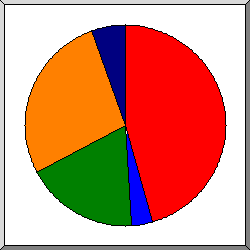
Поделено на сектора по количеству обращений.
200 OK
301 Document moved permanently
304 Not modified since last retrieval
404 Document not found
500 Internal server error
Список кодов возврата, отсортированный по порядковым номерам.
| запросы | код статус |
|---|---|
| 1590 | 200 OK |
| 117 | 301 Document moved permanently |
| 638 | 304 Not modified since last retrieval |
| 958 | 404 Document not found |
| 188 | 500 Internal server error |
(Переход: Вверх | Основная Информация | Статистика по месяцам | Статистика по дням недели | Статистика по времени суток | Статистика по доменам | Статистика по организациям | Статистика по перенаправляющим ссылкам | Статистика отказов по ссылкам | Статистика по ссылающимся сайтам | Статистика по браузерам (подробная) | Статистика по браузерам (суммарная) | Статистика по операционным системам | Статистика по коду возврата | Статистика по размерам файлов | Статистика по типам файлов | Статистика по директориям | Статистика по запросам)
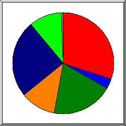
Поделено на сектора по количеству обращений.
0
11B- 100B
101B- 1kB
1kB- 10kB
10kB-100kB
100kB- 1MB
другое
| размер | запросы | %байт |
|---|---|---|
| 0 | 671 | |
| 1B- 10B | 8 | |
| 11B- 100B | 70 | |
| 101B- 1kB | 437 | 0,22% |
| 1kB- 10kB | 248 | 0,56% |
| 10kB-100kB | 556 | 27,56% |
| 100kB- 1MB | 232 | 58,55% |
| 1MB- 10MB | 6 | 13,11% |
(Переход: Вверх | Основная Информация | Статистика по месяцам | Статистика по дням недели | Статистика по времени суток | Статистика по доменам | Статистика по организациям | Статистика по перенаправляющим ссылкам | Статистика отказов по ссылкам | Статистика по ссылающимся сайтам | Статистика по браузерам (подробная) | Статистика по браузерам (суммарная) | Статистика по операционным системам | Статистика по коду возврата | Статистика по размерам файлов | Статистика по типам файлов | Статистика по директориям | Статистика по запросам)
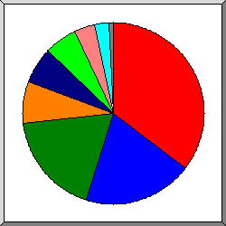
Поделено на сектора по суммарному трафику.
.jpg [JPEG graphics]
.js [JavaScript code]
.map
.ttf
.png [PNG graphics]
[без расширения]
.css [Cascading Style Sheets]
[директории]
другое
Список расширений на которые приходиться, как минимум 0,1% трафика, отсортировано по суммарному трафику.
| запросы | %байт | расширение |
|---|---|---|
| 680 | 35,35% | .jpg [JPEG graphics] |
| 165 | 19,45% | .js [JavaScript code] |
| 35 | 18,38% | .map |
| 28 | 7,41% | .ttf |
| 83 | 6,57% | .png [PNG graphics] |
| 105 | 5,86% | [без расширения] |
| 92 | 3,73% | .css [Cascading Style Sheets] |
| 347 | 2,48% | [директории] |
| 8 | 0,50% | .php [PHP] |
| 579 | 0,27% | .svg |
| 106 | [не распознано: 2 расширений] |
(Переход: Вверх | Основная Информация | Статистика по месяцам | Статистика по дням недели | Статистика по времени суток | Статистика по доменам | Статистика по организациям | Статистика по перенаправляющим ссылкам | Статистика отказов по ссылкам | Статистика по ссылающимся сайтам | Статистика по браузерам (подробная) | Статистика по браузерам (суммарная) | Статистика по операционным системам | Статистика по коду возврата | Статистика по размерам файлов | Статистика по типам файлов | Статистика по директориям | Статистика по запросам)
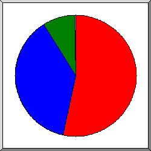
Поделено на сектора по суммарному трафику.
/assets/
/static/
[корневой каталог]
другое
Список директорий на которые приходиться, как минимум 0,01% трафика, отсортировано по суммарному трафику.
| запросы | %байт | директория |
|---|---|---|
| 1490 | 53,30% | /assets/ |
| 172 | 37,86% | /static/ |
| 524 | 8,65% | [корневой каталог] |
| 2 | 0,17% | /cabinet/ |
| 40 | 0,01% | [не распознано: 2 директорий] |
(Переход: Вверх | Основная Информация | Статистика по месяцам | Статистика по дням недели | Статистика по времени суток | Статистика по доменам | Статистика по организациям | Статистика по перенаправляющим ссылкам | Статистика отказов по ссылкам | Статистика по ссылающимся сайтам | Статистика по браузерам (подробная) | Статистика по браузерам (суммарная) | Статистика по операционным системам | Статистика по коду возврата | Статистика по размерам файлов | Статистика по типам файлов | Статистика по директориям | Статистика по запросам)
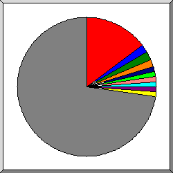
Поделено на сектора по количеству обращений.
/
/robots.txt
/owner
/favicon.ico
/assets/iconic/svg/envelope-closed.svg
/assets/js/jquery-3.2.1.min.js
/main
/assets/img/shopping-cart.svg
/assets/js/slick.min.js
/assets/img/Wishlist/703.jpg
другое
Список файлов на которые приходиться, как минимум 20 запросов, отсортировано по количеству обращений.
| запросы | %байт | последнее время | файл |
|---|---|---|---|
| 331 | 2,30% | 13 июн 18 14:28 | / |
| 42 | 13 июн 18 13:31 | /robots.txt | |
| 42 | 3,51% | 13 июн 18 13:21 | /owner |
| 38 | 13 июн 18 13:37 | /favicon.ico | |
| 28 | 13 июн 18 13:21 | /assets/iconic/svg/envelope-closed.svg | |
| 26 | 1,16% | 11 июн 18 12:50 | /assets/js/jquery-3.2.1.min.js |
| 26 | 1,18% | 11 июн 18 12:50 | /main |
| 25 | 0,02% | 11 июн 18 12:50 | /assets/img/shopping-cart.svg |
| 25 | 0,53% | 11 июн 18 12:50 | /assets/js/slick.min.js |
| 25 | 0,19% | 11 июн 18 12:50 | /assets/img/Wishlist/703.jpg |
| 25 | 0,09% | 11 июн 18 12:50 | /assets/js/script.js |
| 25 | 4,62% | 7 июн 18 16:07 | /static/css/app.5a3e108f630490f5cee1559b33b497ae.css.map |
| 25 | 0,02% | 11 июн 18 12:50 | /assets/img/shopping-cart-black.svg |
| 25 | 0,01% | 11 июн 18 12:50 | /assets/img/heartBlack.svg |
| 24 | 0,01% | 11 июн 18 12:50 | /assets/img/network/telegram.svg |
| 24 | 0,01% | 11 июн 18 12:50 | /assets/img/heart.svg |
| 24 | 0,47% | 7 июн 18 10:44 | /assets/js/velocity.js |
| 24 | 0,02% | 11 июн 18 12:50 | /assets/img/avatar.svg |
| 24 | 0,01% | 11 июн 18 12:50 | /assets/img/network/facebook.svg |
| 24 | 0,20% | 11 июн 18 12:50 | /assets/css/bootstrap.min.css |
| 24 | 0,01% | 11 июн 18 12:50 | /assets/img/rectangle-3.svg |
| 24 | 1,33% | 11 июн 18 12:50 | /assets/css/style.css |
| 24 | 0,02% | 11 июн 18 12:50 | /assets/img/network/instagram.svg |
| 24 | 0,02% | 11 июн 18 12:50 | /assets/img/network/what.svg |
| 24 | 0,02% | 11 июн 18 12:50 | /assets/img/network/vk.svg |
| 24 | 0,28% | 11 июн 18 12:50 | /assets/img/logo.png |
| 24 | 0,01% | 11 июн 18 12:50 | /assets/img/magnifying-glass.svg |
| 23 | 0,01% | 11 июн 18 12:50 | /assets/css/reset.css |
| 21 | 0,02% | 11 июн 18 12:50 | /assets/img/like.svg |
| 21 | 0,01% | 11 июн 18 12:50 | /assets/img/star.svg |
| 21 | 0,01% | 11 июн 18 12:50 | /assets/img/star2.svg |
| 21 | 15,93% | 13 июн 18 13:21 | /static/js/vendor.ae696f57a3546fe0dcd0.js |
| 21 | 2,19% | 13 июн 18 13:21 | /static/css/app.5a3e108f630490f5cee1559b33b497ae.css |
| 21 | 0,01% | 13 июн 18 13:21 | /static/js/manifest.2ae2e69a05c33dfc65f8.js |
| 1059 | 65,77% | 13 июн 18 13:21 | [не распознано: 198 файлов] |